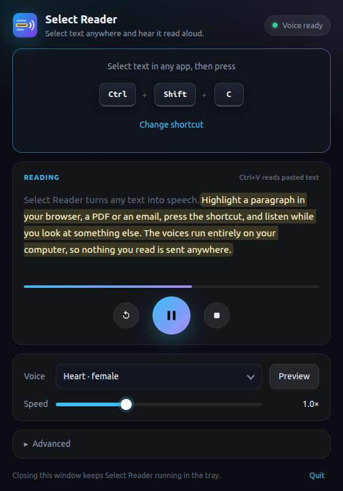

Natural AI voices
27 lifelike Kokoro voices in American and British English. Change the speed from 0.5× to 2×.
Free text to speech · Works offline
Select Reader reads the text you select in any app, like web pages, PDFs, emails or code, with natural AI voices that run on your own computer. For Linux and Windows.
Windows 10 and 11 · Ubuntu, Debian and other Linux

How to use
The first time, Select Reader downloads its voice (about 310 MB, once). After that it works without internet.
Anywhere you can select text: your browser, a PDF, an email, a document, your code editor.
Ctrl + Shift + C
It starts reading and highlights the sentence it's on. Press it again to stop.
Features
27 lifelike Kokoro voices in American and British English. Change the speed from 0.5× to 2×.
Everything runs on your computer. Your text never leaves it, and there's no account to make.
It speaks the first sentence while it prepares the rest, so long articles start without a wait.
Browsers, PDF readers, email, office documents, code editors and terminals.
See which sentence is being read. Pause, resume, replay or stop at any time.
Use any key combination you like. It works in every app, even when the window is closed.
Download
Windows 10 and 11
Download installerIf Windows says it protected your PC, click More info → Run anyway. The installer isn't signed yet.
Ubuntu, Debian, Mint and others
Download .deb Other Linux: AppImageNot tested yet
Build it yourselfFor power users
Bind these to keys in your desktop settings, or use them in scripts.
select-reader --read # read the selected text
select-reader --text "Hello" # read some text
select-reader --pause # pause or resume
select-reader --stop # stopSend text from a browser extension or any tool on your computer.
curl "http://127.0.0.1:4040/read?text=Hello"
curl "http://127.0.0.1:4040/pause"
curl "http://127.0.0.1:4040/stop"FAQ
Yes. It's free to download and use, and the source code is on GitHub.
Only the first time you start it, to download the voice (about 310 MB). After that it works offline, and the text you listen to never leaves your computer.
English, with 27 voices in American and British accents. Pick one in the app and it plays a short preview.
Click Change shortcut in the window and press the keys you want, like Ctrl + Alt + R.
The installer isn't code-signed yet, so Windows doesn't recognize it. Click More info → Run anyway to install.
Select Reader needs the small xdotool program to copy the selected text.
The .deb installs it for you. With the AppImage, run
sudo apt install xdotool.
Some Wayland desktops block global shortcuts. Add a keyboard shortcut in your desktop
settings that runs select-reader --read.